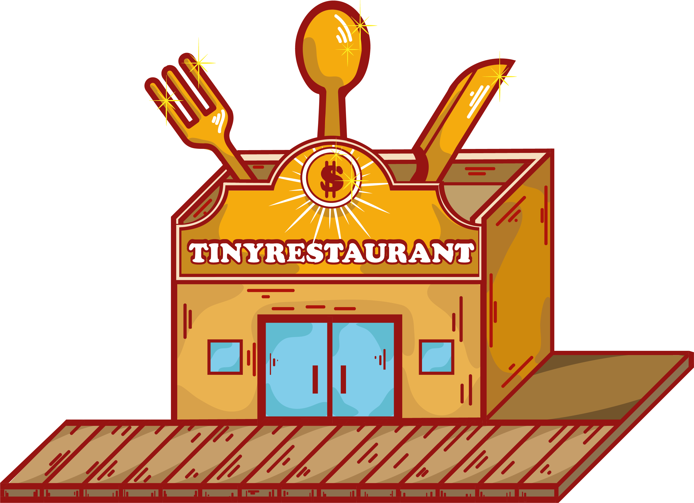

TINY RESTAURANT
IT'S
TIME
TO COOK!

Tiny Restaurant is inspired by the famous cooking simulation videogame saga “Cooking Mama”,
where you had to show your cooking skills through a set of minigames and get the highest score.
Now in Tiny Restaurant you will have to put on the chef’s hat again and impress all your clients
with the most delicious dishes, all this in order to obtain great rewards.
However, and unlike in the Cooking Mama series, in Tiny Restaurant you will have to get a
cookware kit and take care of keeping your refrigerator full of food in order to be able to cook and
advance on the global rank until one day you become a Corporate Chef and become able to own
your own chain of restaurants


Adrian Zamora
CEO & Director de programacion
 Twitter
Twitter

Gabriel Hernandez
Co-CEO & Director de programacion Blockchain
Twitter

Jesus Rivas
Co-ceo & Co-Director de programacion
Twitter

Julio Cesar
Director de Diseño Grafico
Red Social 1

Arnaldo Dìaz
Director de Marketing
Red Social 1